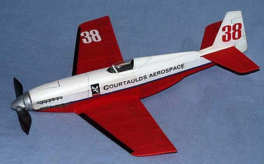

|
Hi all,
I've seen the posts about tissue molding on scale models, and only now have a chance to share my experiences. First of all these methods were developed by Jack McGillvray, and the late Ken Groves, according to my "Canadian Spy" Pete Kearney. He learned these methods from these fine gentleman and kindly passed them onto me...to shut me up I'm sure. Anyway, my P-51A uses 'stringerless tissue'. This is great for NON-compound curve surfaces...kind of partial cones. Pre-painted tissue is simply glued over the front and rear former of each section. This is done over a box fuselage that has been covered on all 4 sides. By doing several sections I was able to do the entire rear of the fuselage this way quite accurately. The front uses stringers, and looks hokey. This new peanut is looks like a Mustang, but it is actually a demised experimentally licensed unlimited air-racer, Miss Ashley II. The real airplane used clipped Learjet flying surfaces, and therefor the peanut is considerably bigger than the Mustang (wing area, length). The model is a VERY accurate rendition of the real, from race-team supplied 3-views. I did use molded tissue on this one to get the cool compound curves that housed that big Griffon powerplant. The top front half of the fuselage is 2 layers of tissue, molded wet with thinned white glue over a carved balsa form. A block of wood is simply cut to the top and side profile, then sanded to shape. The mold is prepped with three thick coats of nitrate, and sanded smooth then waxed, or sprayed with a mold release. (actually finished like a good HLG). Not much work for a mold the size you need for a peanut. After the mold looks good, and is painted, glue a 1/2" thick balsa block to the bottom, that matches the bottom shape. This will give you a place to glue the excess tissue to hold it down while 'wet covering' the mold. It also helps if the lower block is just a little smaller than the mold, as this gives you a reference edge to cut the finished panel loose from. The cut loose piece is then glued directly onto the fuselage longerons, and front and rear formers. The bottom scoop and nose were made from just one layer of tissue, wet molded and topped with a thinned coat of white glue. It seems the more compound the shape, the better it holds it...like a stressed skin perhaps. The rear of the fuselage and canopy turtledeck are the previously mentioned 'stringerless method'. This was my first attempt at molded tissue, and there is allot more to learn. There is no doubt that this method requires some work, but for your efforts you get a very accurate model (after all there are no stringers in aluminum skinned airplanes), no wrinkles, and light weight, definitely lighter than plastic. The completed Miss Ashley II weighs just under 6 grams, and has done 1:34 in a 30' gym on about 3/4 turns. Another benefit is, with the molds done, a second model would probably easier/quicker to build than it would with stringers. Other model info, it is painted with Floquil pigments, the numbers are cut from tissue, and the lettering on the sides are rub-ons. The 'Miss Ashley II' nose art was drawn and printed on a very generous friend's Alps printer. Blue Skies ~Jim This update just came from Jim in a recent post. Miss Ashley II won peanut scale at the 2000 USIC, and had a best time of 2:11. |
Copyright 2000, Thayer Syme. All rights reserved